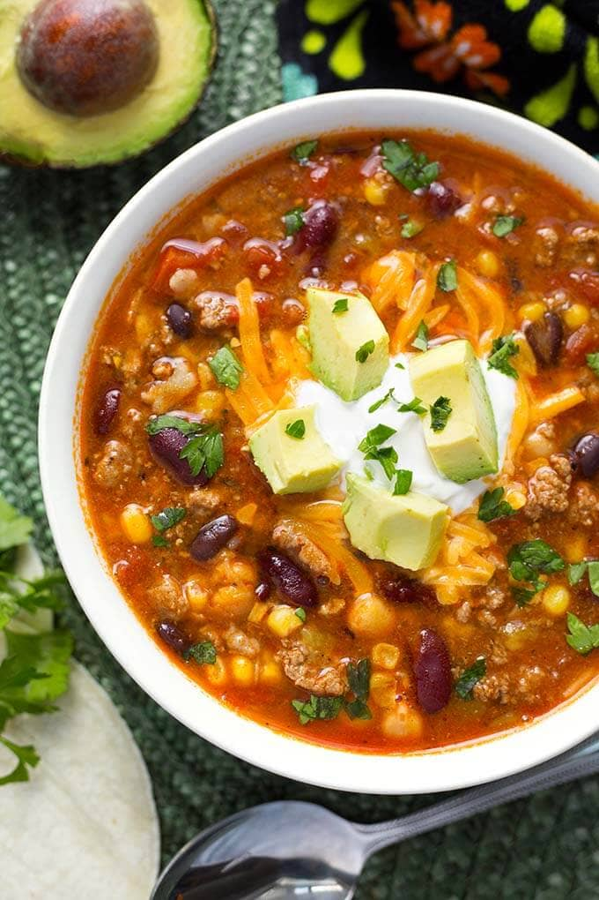

Taco Soup

Description
Instant Pot Taco Soup is one of the easiest soups to make. This is a variation on an old family favorite. I adapted this to be a pressure cooker taco soup. It's delicious and zesty!
Ingredients
- -2 lbs Ground Beef or Ground Turkey (93% lean) use a little oil for browning turkey
- 1 packet Taco Seasoning Mix, about 3 Tbsp.
- 1 tsp Garlic Powder
- ½ tsp Onion Powder
- ½ tsp Oregano
- ½ tsp Salt
- ½ tsp Pepper
- 1 packet Ranch Dressing Mix (optional)
- 1 (10 oz) can Rotel
- 1 (7 oz) can Diced Green Chiles, With juice
- 4 cups Chicken Broth, low sodium
- 1 (14 oz) can Black Beans, rinsed & drained
- 1 (14 oz) can Garbanzo Beans, rinsed & drained
- 1 (14 oz) can Red Kidney or Pinto Beans, rinsed & drained
- 1 (14 oz) can Diced Tomatoes, with juice
Steps
- Turn the pressure cooker on to the Sauté setting. Add the meat (add a little oil if using turkey). Cook for a few minutes.
- Add the taco seasoning, garlic powder, onion powder, oregano, salt, and pepper. Continue cooking, stirring occasionally, until meat is cooked.
- Add the Ranch packet, if using, Rotel, green chiles, and chicken broth. Stir, and place a glass lid on the pot to help the broth heat up faster. Once the broth is at a slow simmer, add all of the beans and stir well.
- Add the can of diced tomatoes, but don't stir. Place the lid on the pot and lock in place. Turn the steam release knob to the Sealing position.
- Cancel the Sauté setting and then press the Pressure Cook/Manual button (or dial) and the + or - button (or dial) to choose 6 minutes. The pot will take several minutes to build up the pressure before the timer starts.
- When the cooking cycle has finished, let the pot sit undisturbed for 15 minutes. Then do a controlled Quick Release of the pressure by turning the knob towards the Venting position in short bursts (I use a wooden spoon handle). When you feel confident that no soup will spew out with the steam, open the knob all the way.
- When the pin in the lid drops down, you can open the lid facing away from you. Give the soup a stir, carefully as there could be some hot steam pockets in there.
- Taste and adjust salt, if needed, then add the tortillas and the corn. Stir well and let sit for a few minutes, stirring occasionally to help dissolve some of the tortillas.
- Serve with any of the garnishes you like!
Home